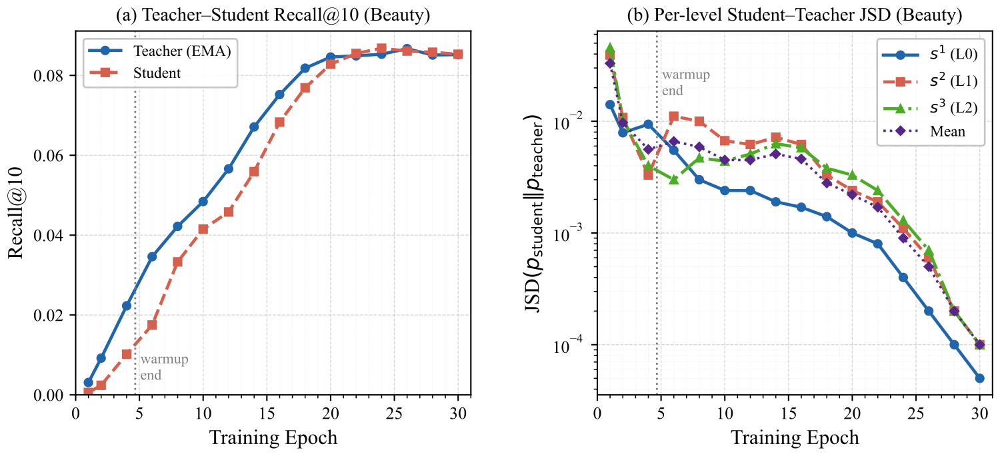
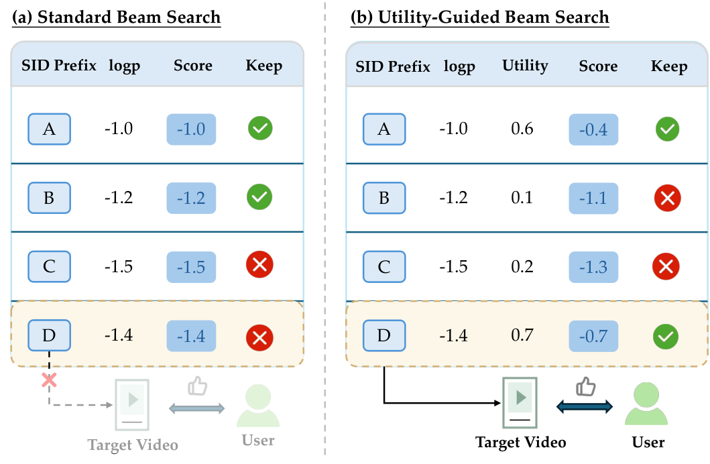
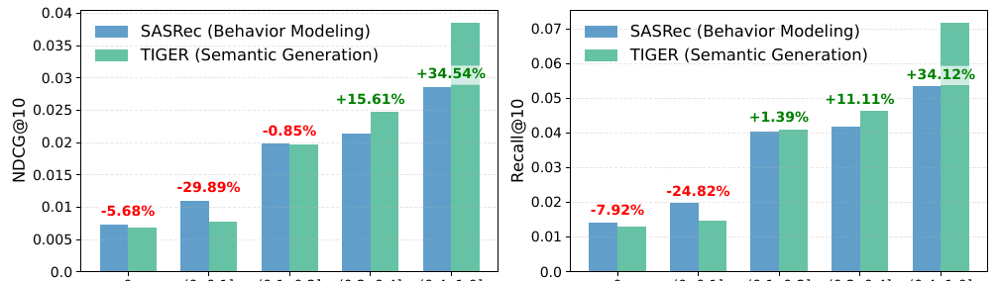

Contents · 6 sections
1If the SID is already coarse-to-fine, what is missing?2Give the model a coarser target before its first code3What does the teacher receive, and under what conditions does the student imitate it?4Why give an earlier, coarser code more computation?5Which experiment tests the added training objectives?6Which part would I try first?SHARE
Generative retrieval predicts the next item's Semantic ID (SID) one code at a time from user history, but ordinary next-code training checks only the probability assigned to the correct code. When that probability stays the same, redistributing the remaining probability among incorrect candidates does not change this cross-entropy loss. BRIDGE (the generative retrieval model studied here) also uses relationships between items to train the generator. In the reported Beauty ablation, the configuration with both added losses has 12.8% higher Recall@10 than the reported comparison configuration without those added losses.
If the SID is already coarse-to-fine, what is missing?
Separate two operations in a recommendation request. When items enter the catalog, they receive SIDs. When a user makes a request, the model predicts the next item's SID from past interactions. The first operation groups items; the second learns which group the user is likely to interact with next.
BRIDGE uses RQ-VAE to assign codes. An item becomes an embedding; the first codebook supplies its nearest representative vector, whose index is recorded. After subtracting that approximation, the next level approximates the residual. The resulting indices form the SID. Items sharing the first code share that level's representative, while later codes refine the representation. The existing SID genuinely carries a coarse-to-fine organization.
The generator can also learn relationships. Historical continuous item embeddings enter this paper's backbone through an MLP. Previously generated codes become learnable code embeddings that condition subsequent positions. The model is not restricted to processing meaningless integers.
The issue is how training evaluates a prediction. For the first position, the candidates are all indices in the first codebook; the target item's index is correct. Suppose two predictions for the same history assign the same probability to that index. They differ only in how they distribute the remaining probability over incorrect indices. Cross-entropy is identical even if one favors centers near the correct code's center and the other favors distant ones. Distance here is between candidate and correct-code vectors, not between their numerical indices.
Not directly evaluating that difference does not mean the model cannot learn similarity. The paper calls the problem the Semantic Quantization Gap and describes it as losing semantic structure. I read the practical opportunity more narrowly: keep correct-index supervision and add item-vector training references. We first examine the added target before the first code, then how similar items contribute to teacher training. Computation budgets are discussed afterward.
Give the model a coarser target before its first code

Before producing a code, BRIDGE repeatedly sends a learned beginning vector through the same decoder block, cross-attending to history each round. The experiments use four rounds before code generation; subsequent SID generation shares the same block weights. The resulting vector, r, replaces the usual beginning marker and initiates SID generation. It is an input to first-code prediction, not a selected first code.
More rounds alone do not specify which items r should approach. The authors add L_CGLR (the coarse-group supervision loss) to r. To construct these targets, the authors cluster the 2,048 first-level codebook centers into 256 coarser groups. Each has a fixed representative, called a prototype, or group center here. These groups are coarser than the first codebook, are not manually labeled product categories, and do not require rewriting SIDs.
A training example already identifies the next-interaction target. Its first code identifies a codebook center, whose coarse group supplies r's target. Group centers are computed before recommendation training and then held fixed.
Why not supervise the exact first code again? The authors argue that a small embedding perturbation can switch between nearby quantization centers. If those centers belong to the same coarse group, the coarse label remains unchanged. It supplies a stable direction while ordinary next-code loss still learns the precise selection.
After projection into the group-center space and normalization, a classification loss encourages r to be more similar to the correct group center than to alternatives. A cosine loss pulls its direction toward that center. These are training requirements, not answers provided online. At inference, neither the target label nor its group center is supplied; r still comes from history alone.
What does the teacher receive, and under what conditions does the student imitate it?
Coarse-group supervision acts before code generation. PESD (the neighbor-informed teacher distillation module) is another training objective. The student is the generator intended for deployment. The teacher has the same architecture, with main-network weights maintained as a smoother exponential moving average of student weights. It additionally uses items near the target to produce code distributions for the student to learn.
During training, the target is known. The method retrieves its three nearest items by cosine similarity in a frozen collection of item embeddings, excluding the target itself. The index uses the training-time catalog. Their mean vector is projected, normalized and scaled, then added to the teacher's beginning vector. These neighbors are items, not the previous section's codebook centers.
When predicting a later position, the teacher still receives the correct preceding codes: for example, the correct first code when predicting the second. But the complete target SID is not additionally supplied to its beginning vector. The authors want to avoid simply repeating the correct indices with a near-one-hot distribution, which would largely duplicate ordinary cross-entropy supervision. Neighbors are meant to influence the probabilities of alternatives; the algorithm does not prescribe a probability for each nearby code.
The student must also train under its own prefixes. Ordinary training predicts the second code from the correct first code; inference uses the generated first code, which may be wrong. PESD retains ordinary training and adds a student branch that feeds back its previous argmax code. The teacher always uses correct prefixes, alongside its privileged neighbor input.
Student and teacher predict the same candidate indices at a given position; different prefixes do not change that index set. The student self-prefix branch and teacher distributions can therefore be matched index by index using Jensen–Shannon divergence. Even when the student's prefix has diverged, the target remains the teacher's distribution under the correct prefix. The loss pulls the current prediction toward that target; it does not revise already generated codes or guarantee recovery of the target item. This is the authors' chosen training target; the later ablation measures retrieval improvement but does not isolate self-prefix training alone. A cosine term also brings the student's r toward the teacher's.

The teacher main network is not directly updated by backpropagation. Its distributions and r are detached in distillation so the targets do not move toward the student to satisfy the loss. The neighbor projection and scale do need training: they are optimized alongside student parameters, using teacher cross-entropy on the correct SID. Gradients pass through teacher computations to these parameters without updating the teacher main network. Deployment retains only the student and does not retrieve target neighbors. Hoot says

- Update neighbor projection and scale. Teacher main weights use EMA updates.
Teacher cross-entropy trains the neighbor projection and scale through teacher computations, without updating teacher main weights. Distillation detaches teacher outputs so targets do not move toward the student. Source: Paper Sections 3.4.2–3.4.3, Equations 19–24
Why give an earlier, coarser code more computation?
Granularity describes item representation. Difficulty concerns how much the available input narrows the correct answer. The first position has history but no target SID prefix. Later positions, when supplied correct preceding codes, have additional target constraints. The authors use an early-positions-are-generally-harder prior and give the three positions of EAR (the position-dependent recurrent backbone) four, two and one recurrent rounds.
This is not a necessary consequence of coarse-to-fine representation. The codebooks have the same size; the allocation expresses the authors' prior about conditional prediction difficulty. Generated prefixes can also be wrong. EAR is a fixed computation allocation to evaluate, not a theorem.
In the ordinary training path, the correct SID is known. The following describes its state schedule; the earlier four rounds computing r are a separate preceding pass. The three contents are r, the first true code embedding and the second true code embedding. Each is concatenated with its positional embedding and projected into an initial state. They share one decoder block. The first two rounds update position one; the third updates positions one and two; the fourth updates all three. Newly active positions causally attend to previously refined earlier states. A non-recurrent end block then runs once.
Both self-prefix training and online generation must obtain a preceding code before preparing the next input. For Pass B's right-aligned loop schedule during stepwise SID generation, the paper does not specify how earlier recurrent states are recomputed or reused, including whether any KV cache is retained when a new code becomes available. We therefore describe the ordinary training schedule, not a complete online procedure or a request-latency estimate.
The approximately 22% FLOPs reduction has a similarly specific scope: Pass B recurrence only. The shared block has three layers, with seven position updates under the four-two-one schedule, giving twenty-one token-layer computations. The paper’s FLOPs example assumes a uniform nine-layer decoder as its comparison, giving twenty-seven layer-position computations across three positions. Pass A and the end block are excluded, so this is not complete-request cost.
Which experiment tests the added training objectives?
The paper evaluates three Amazon catalogs, holding out each user's final interaction for testing and the preceding one for validation. Table 2 gives these Recall@10 values against its strongest baseline, GR4AD (another generative recommendation model):
| Dataset | GR4AD | BRIDGE |
|---|---|---|
| Sports | 0.0443 | 0.0478 |
| Beauty | 0.0742 | 0.0835 |
| Toys | 0.0788 | 0.0886 |
The complete method improves all three, but combines backbone and training changes. Table 3 compares added-loss configurations on Beauty. The retained backbone objective, L_EAR, combines next-code cross-entropy with L2 regularization of the SID input embeddings used in training. Section 3.6 defines the ablation by disabling L_CGLR and/or L_PESD while retaining L_EAR. These labels describe loss settings, not whether pre-generation computation was removed:
| Configuration | Recall@10 | NDCG@10 |
|---|---|---|
| EAR baseline | 0.0740 | 0.0462 |
| With L_CGLR | 0.0818 | 0.0499 |
| With L_PESD | 0.0780 | 0.0485 |
| With both | 0.0835 | 0.0520 |
The configurations with either added loss outperform the EAR baseline, and combining them performs better than either alone: Recall@10 is 12.8% higher than in the first row. This table does not separately measure the benefit of the four pre-generation rounds. This ablation does not remove EAR while retaining both objectives, so it cannot isolate EAR's accuracy contribution.
Throughput and revenue need their own comparison scopes. The paper reports approximately 20% higher QPS for EAR than GR4AD on an NVIDIA L20. Its revenue section reports a 0.65% eCPM lift for the complete method in a week-long e-commerce advertising experiment with 5% traffic. That section names no control and provides no online module ablation; the revenue comparison cannot be assumed to be against GR4AD.
Which part would I try first?
On a backbone that already has pre-generation computation, I would hold the SID and backbone fixed and first test coarse-group supervision, tracking both first-code loss and final retrieval. This most directly tests whether the added item-side reference helps. A subsequent teacher experiment should separately record neighbor preparation, teacher forward passes and the student's additional branch.
The public module ablation covers Beauty only, and the three offline catalogs each contain roughly ten to twenty thousand items. Whether the grouping helps another system and whether semantic neighbors reflect user behavior depend on its data. Teacher–student convergence alone cannot answer those questions.
The recurrent backbone needs a budget-matched comparison including pre-generation computation, the end block and actual decoding in latency. BRIDGE's useful lesson is that an existing semantic SID can still benefit from more explicit item relationships during training. It does not require adopting every backbone change together.
| Dimension | Assessment |
|---|---|
| Problem importance | High: testable training improvements remain possible with the same SID. |
| Method novelty | Moderate: combines coarse targets, privileged distillation and shared recurrence. |
| Experimental evidence | Moderate: positive results on three catalogs; module ablation on Beauty only. |
| Engineering cost | Moderately high: teacher, extra branch and pre-generation computation. |
| Worth trying | Conditional: hold the backbone constant to attribute training gains. |
How did this read for you?
Hoot made a note. Thanks for the feedback.
One tap, no sign-in; tap again to undo. Only anonymous counts are kept, never who you are.
Related papersMore from Paper Daily
 Generative · 2026-11-02Towards Reliable, Scalable, and Value-Aligned Generative Recommendation for Large-Scale AdvertisingKuaishou made three changes to GR4AD, its deployed generative ad retrieval system, and the result, GR4AD-X, raises online ad revenue by a cumulative 3.07% over GR4AD. All three target the same mismatch: the model picks ads by generation probability, while the platform cares about revenue. The top ten ads by generation probability and the top ten by eCPM barely overlap, with a hit rate of only abo…
Generative · 2026-11-02Towards Reliable, Scalable, and Value-Aligned Generative Recommendation for Large-Scale AdvertisingKuaishou made three changes to GR4AD, its deployed generative ad retrieval system, and the result, GR4AD-X, raises online ad revenue by a cumulative 3.07% over GR4AD. All three target the same mismatch: the model picks ads by generation probability, while the platform cares about revenue. The top ten ads by generation probability and the top ten by eCPM barely overlap, with a hit rate of only abo… Generative · 2026-10-21AGR: Agentic Generative Retrieval with Tool-Augmented SearchGenerative retrieval need not encode every available feature up front. AGR requests intent, location, or behavioral evidence while decoding item identifiers, then resumes generation with a compact observation. A Kuaishou online experiment reports a 0.205% increase in requests with strongly relevant top-four results.
Generative · 2026-10-21AGR: Agentic Generative Retrieval with Tool-Augmented SearchGenerative retrieval need not encode every available feature up front. AGR requests intent, location, or behavioral evidence while decoding item identifiers, then resumes generation with a compact observation. A Kuaishou online experiment reports a 0.205% increase in requests with strongly relevant top-four results. Generative · 2026-11-04Beyond Semantic IDs: Atomic Creator Tokens for Large-Scale Generative RecommendationThis Meta paper gives every creator its own token in the language model's vocabulary and uses it in place of the SID. The reason is simple: an SID is a many-to-one code, so several creators share one SID, and even when the model generates the right SID it still has to guess which of those creators the user wants. On Meta's creator recommendation data, swapping only the token layer lifts the share…
Generative · 2026-11-04Beyond Semantic IDs: Atomic Creator Tokens for Large-Scale Generative RecommendationThis Meta paper gives every creator its own token in the language model's vocabulary and uses it in place of the SID. The reason is simple: an SID is a many-to-one code, so several creators share one SID, and even when the model generates the right SID it still has to guess which of those creators the user wants. On Meta's creator recommendation data, swapping only the token layer lifts the share…
Generative · 2026-11-04Utility-Aware Generative Recommendation: Utility-Enriched Semantic Codes and Utility-Guided DecodingThis Kuaishou paper adds video utility to two places in generative recommendation that used to look only at content and probability. 3 bits inside the last SID token record the video's utility tier: 7 ascending boundaries cut one utility statistic (such as historical click rate) into 8 tiers. At every beam-search step a small module reads the decoder hidden state, predicts behaviors such as watch… Generative · 2026-10-29REGER: Modeling inter-item Relations with Semantic IDs for Generative RecommendationCross-entropy tells a generative recommender only which token is correct, with no signal about how other candidates compare. REGER, from the University of Electronic Science and Technology of China, splits a conventional sequential model's scores over all items into branch preferences along the SID prefix tree and distills them along the true path. Added alone to TIGER, it lifts Beauty Recall@10…
Generative · 2026-10-29REGER: Modeling inter-item Relations with Semantic IDs for Generative RecommendationCross-entropy tells a generative recommender only which token is correct, with no signal about how other candidates compare. REGER, from the University of Electronic Science and Technology of China, splits a conventional sequential model's scores over all items into branch preferences along the SID prefix tree and distills them along the true path. Added alone to TIGER, it lifts Beauty Recall@10… Generative · 2026-10-28MuSID-KD: Multigranularity Knowledge Distillation for Generative Recommendation with Semantic IDsWhen a SID-based generative recommender is distilled into a small model, the student is usually asked only to match the teacher's distribution over which item to recommend in the end. ECNU's MuSID-KD (a multi-granularity distillation method that works level by level over the SID) finds this is not enough: a student aligned only on items disagrees with the teacher on the order of candidate groups…
Generative · 2026-10-28MuSID-KD: Multigranularity Knowledge Distillation for Generative Recommendation with Semantic IDsWhen a SID-based generative recommender is distilled into a small model, the student is usually asked only to match the teacher's distribution over which item to recommend in the end. ECNU's MuSID-KD (a multi-granularity distillation method that works level by level over the SID) finds this is not enough: a student aligned only on items disagrees with the teacher on the order of candidate groups… Generative · 2026-10-28PinGER: Token-Efficient Generative Retrieval with Semantic IDsGenerative retrieval encodes each item as a multi-level SID and generates it level by level, but on the input side every history item costs several tokens. During training, Pinterest's PinGER places one dense-vector token after each item's SID and requires that any token reading another item may see only that item's dense token, never its SID. At serving time all SIDs in the history can be droppe…
Generative · 2026-10-28PinGER: Token-Efficient Generative Retrieval with Semantic IDsGenerative retrieval encodes each item as a multi-level SID and generates it level by level, but on the input side every history item costs several tokens. During training, Pinterest's PinGER places one dense-vector token after each item's SID and requires that any token reading another item may see only that item's dense token, never its SID. At serving time all SIDs in the history can be droppe…
Generative · 2026-10-27Unifying Behavior Modeling and Semantic Generation for Generative RecommendationGenerative recommenders that write the next item's Semantic ID code by code have a systematic bias. This KDD 2026 paper from South China University of Technology finds that the fewer items in a user's history share the target's category, the worse they do against classic behavior-only sequential models; in the worst group, TIGER's NDCG@10 trails SASRec by 30%. The cause: the encoder learns which…
Discussion
Add experiment details, reproduction notes or a different take. Requires a GitHub sign-in.
Loading the discussion…